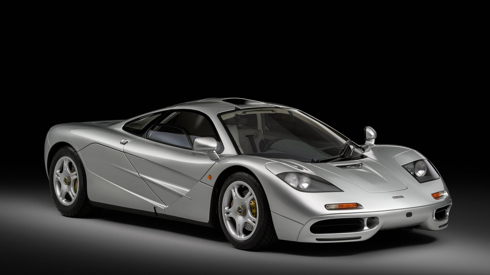

auto's
McLaren F1 Mercedes-Benz SLR McLaren (codename P7) McLaren MP4-12C McLaren P1 McLaren 720S Afgeblazen projecten Trivia Zie ook Externe links McLaren Automotive Artikel Overleg Lezen Bewerken Brontekst bewerken Geschiedenis weergeven Hulpmiddelen Uit Wikipedia, de vrije encyclopedie McLaren Logo Portaal Portaalicoon Economie McLaren-logo op een McLaren F1 McLaren Automotive (voorheen McLaren Cars) is een Britse autofabrikant opgericht in 1989. McLaren is gespecialiseerd in het maken van auto’s gebaseerd op Formule 1-technologie. Het bedrijf werkt nauw samen met Team McLaren, en is onderdeel van de McLaren Group. McLaren Cars wordt geleid door Ron Dennis, die meer dan 20 jaar het McLaren F1 team met succes heeft geleid. McLaren F1 Zie McLaren F1 (auto) voor het hoofdartikel over dit onderwerp. McLaren F1 De eerste auto van het bedrijf was de McLaren F1, een sportwagen ter waarde van £640.000,- (ongeveer $ 1.150.000,-). De F1 was een driezits coupé met de chauffeur in het midden van de wagen. De auto werd ontworpen door Gordon Murray, die ook een aantal van de racewagens voor McLaren ontwierp. De 6064 cc V12 motor werd ontwikkeld door BMW. De productie van de originele F1 begon in 1992. Het LM-model werd geïntroduceerd in 1995 en het GT-model in 1997. De GTR werd gebouwd van 1995 tot 1997. Productie van de McLaren F1 werd afgerond in mei 1998, met een totale productie van honderd auto’s. Varianten waren de 64 F1 (street car), 5 LM, 3 GT, 9 GTR95, 9 GTR96 en 10 GTR97. De McLaren F1 GTR werd ontwikkeld van de F1 road car. Mercedes-Benz SLR McLaren (codename P7) Zie Mercedes-Benz SLR McLaren voor het hoofdartikel over dit onderwerp. Mercedes-Benz SLR McLaren op de motorshow in Parijs in September 2004. In 1999 ging McLaren ermee akkoord om samen met Daimler AG de Mercedes-Benz SLR McLaren te ontwerpen en bouwen. Daimler AG is de voornaamste aandeelhouder van de McLaren Group, en levert motoren aan het Team McLaren raceteam. De laatste productiestappen van de Mercedes-Benz SLR McLaren vinden plaats in een unieke fabriek in het McLaren Technology Centre. De SLR heeft een 5.5 liter Supercharged V8 motor. In 2006 werd de Mercedes-Benz McLaren SLR 722 Editie aangekondigd, en in 2007 de Mercedes-Benz McLaren SLR Convertible. McLaren MP4-12C Zie McLaren MP4-12C voor het hoofdartikel over dit onderwerp. In 2009 werd door McLaren weer een auto ontworpen, en deze werd gebouwd door McLaren zelf. De McLaren MP4-12C werd op 8 september 2009 voorgesteld en ging in 2011 in productie. De MP4-12C heeft een 3.8 Liter V8 twin-turbomotor. McLaren P1 De McLaren P1 is een hybride hypercar waar er 375 van worden gemaakt. De McLaren P1 moet de strijd aangaan met twee andere hybride hypercars: de Ferrari LaFerrari en de Porsche 918 Spyder. De auto wordt gebouwd in de fabriek in Woking, Engeland. McLaren 720S McLaren 720S Spider De McLaren 720S is een model van McLaren dat vanaf mei 2017 geleverd wordt. Het is een supercar aangedreven door een nieuw ontwikkelde 4.0 V8. Het blok is goed voor 720 pk en 770 Nm. De 720S legt 0–100 km/u in 2,9 seconden af en de topsnelheid bedraagt 341 km/u. De auto beschikt over een carbon monocoque en heeft een massa van 1283 kg. Afgeblazen projecten De samenwerking tussen Mercedes-Benz en McLaren resulteerde in plannen voor nog drie auto’s, die de codenamen P8, P9 en P10 kregen. Deze plannen werden in 2005 afgeblazen daar Mercedes de productie blijkbaar te duur vond.
From Wikipedia, the free encyclopedia This article is about the sports car built by McLaren Automotive. For the racing driver it is named after, see Ayrton Senna. For other uses, see Senna (disambiguation). McLaren Senna Overview Manufacturer McLaren Automotive Also called P15 Aina (internal code) Production 2018–present[1] 500 Senna made 75 Senna GTR made 35 Senna LM made 5 Senna GTR LM made Model years 2019–present Assembly Woking, Surrey, England Designer Robert Melville[2] Body and chassis Class Sports Car (S) Body style 2-door coupé Layout Rear mid-engine, rear-wheel-drive Platform MonoCage III carbon fiber monocoque Doors Butterfly Related McLaren 720S McLaren Speedtail McLaren Elva Powertrain Engine 4.0 L Ricardo-built and assembled McLaren M840TR twin-turbocharged V8 Power output 588 kW (799 PS; 789 hp) 800 N⋅m (590 lb⋅ft) Transmission 7-speed dual-clutch Dimensions Wheelbase 2,670 mm (105.1 in) Length 4,744 mm (186.8 in)[3] Width 2,153 mm (84.8 in)[4] Height 1,195 mm (47.0 in)[5] Curb weight 1,374 kg (3,029 lb)[6] The McLaren Senna is a limited-production mid-engined sports car manufactured by McLaren Automotive. The car is the third addition in the McLaren Ultimate Series, joining the F1 and the P1; however, it is not a direct successor to either of the cars. The Senna was unveiled online by the company on 10 December 2017,[7] with the official unveiling taking place at the 2018 Geneva Motor Show.[8][9] Nomenclature See also: Ayrton Senna The car is named after the Brazilian Formula One race driver Ayrton Senna (1960–1994), honouring and giving tribute to his success with the McLaren Formula One Team between 1988 and 1993 Formula 1 seasons. Senna won three Formula One World Drivers' Championship titles and thirty-five Formula One Grand Prix race wins with the team;[10] McLaren also won four consecutive Formula One World Constructor's Championship titles with Senna as part of their driver line-up. McLaren Automotive holds the rights to the Senna family name along with the Instituto Ayrton Senna.[10][11] The organisation and McLaren have made the Senna name exclusive to the car, thereby prohibiting any other company from using the name.[11][12] Specifications and performance Exterior McLaren Senna Prototype front view McLaren Senna Prototype rear view McLaren's main focus while designing the Senna was to achieve faster lap times. In order to do so, McLaren developed a lightweight design that incorporated aerodynamic elements.[13] The Senna is largely based on the McLaren 720S, using a modified version of its carbon fibre monocoque and engine. The Senna is powered by a modified version of the McLaren 720S' 3,994 cc (4.0 L; 243.7 cu in) twin-turbocharged V8 engine codenamed the M840TR. It utilises a seven-speed dual-clutch transmission that delivers all 588 kW (799 PS; 789 hp) at 7,250 rpm and 800 N⋅m (590 lb⋅ft) of torque at 5,500 rpm to the rear wheels.[8][14][15] Unlike the previous offering in the Ultimate Series, the McLaren P1, the Senna does not use an electric motor in favour of its low claimed dry weight of 1,198 kg (2,641 lb), which allows for a maximum power-to-weight ratio of 491 kW (668 PS; 658 hp) per ton.[14] The car has many aerodynamic elements, there being a large adjustable double-element rear wing (that is operated electronically and has various settings in order to provide optimum performance while also acting as an airbrake), double-element diffuser, Formula One-inspired roof scoop, front and side air intakes, rear air louvres, and large front fenders. Inside the panel beside the intakes is a small set of mini-canards. Areas of low pressure are accompanied using high-performance radiators that ensure improved engine cooling.[16] The car uses dihedral doors, like the previous offerings in the Ultimate Series, and also has optional windows applied on the lower area of its doors.[17] The Senna uses a new generation of Brembo's carbon ceramic brakes, containing a compound that has three and a half times better thermal conductivity than before, making the brakes smaller and lighter. It also features a new set of lightweight center-lock alloy wheels designed for Pirelli P-Zero Trofeo R tyres. Its central design is a new generation of McLaren's carbon fibre monocoque named MonoCage III, which contributes to the car's relatively low dry weight. The car utilises a top mounted (hot-vee) inconel-titanium exhaust system with three outlet pipes in order for a more aggressive exhaust note and engine emissions.[12][16] Interior McLaren Senna Interior The interior consists largely of exposed carbon fibre and Alcantara, with seats that can be upholstered in Alcantara or leather, depending on the customer's preference.[9] Behind the two seats is room large enough for two helmets and race suits, reflecting the car's minimalist and track focused design. The car utilises McLaren's hydraulic RaceActive Chassis Control II (RCC II) suspension along with double-wishbone control arms.[9][15] Performance statistics (Manufacturer claimed figures) In February 2018, McLaren released the full performance statistics of the track-oriented Senna model:[18] 0–100 km/h (0–62 mph): 2.8 seconds[19] 0–200 km/h (0–124 mph): 6.8 seconds 0–300 km/h (0–186 mph): 17.5 seconds Standing 1⁄4 mile (402 m): 9.9 seconds Power-to-weight ratio: 659 hp/tonne Top speed: 335 km/h (208 mph) Production Every car was hand-built at the McLaren Production Centre in Woking, Surrey, England with a production run of just 500 units, all of which are already sold.[8][9] The McLaren Senna is listed at a price of £750,000 with the final car auctioned at a price of £1,916,793.[9][14][20] Deliveries began in the third quarter of 2018.[17] McLaren Senna GTR At the 2018 Geneva Motor Show, McLaren unveiled the concept version of the track-only iteration of the Senna dubbed the Senna GTR. The production Senna GTR unveiled two years later has a different bodywork from the concept, with a different wing setup, toned-down aerodynamics, and utilizes a dual-clutch race transmission for faster gear shifts, a revised suspension system and Pirelli racing slicks in order to make it the fastest non-Formula One vehicle McLaren has ever created for faster lap times. The Senna GTR is estimated to produce at least 825 PS (607 kW; 814 hp) from its 4.0 L twin-turbocharged V8 engine and is meant to be faster and more agile than its road-going counterpart. On the exterior, the GTR utilizes wider front and rear fenders, a larger front splitter, new wheels and a bigger rear diffuser in order to make the car generate about 1,000 kg (2,204 lb) of downforce. The Senna GTR will be limited to only 75 examples.[21][22] In reviewing the future regulations for the World Endurance Championship, the Fédération Internationale de l'Automobile (FIA) identified the Senna GTR as one of several models that fit their vision of a replacement for the Le Mans Prototype class.[23][24] It was also a competitor at the 2019 Goodwood Festival of Speed.[citation needed] Gallery McLaren Senna GTR Concept McLaren Senna GTR Concept McLaren Senna GTR Concept (rear view) McLaren Senna GTR Concept (rear view) Senna GTR production version Senna GTR production version Road-legal McLaren Senna GTR (front view) Road-legal McLaren Senna GTR (front view) McLaren Senna LM McLaren Senna LM The McLaren Senna LM is a limited run of the McLaren Senna with 825PS engine, developed by the McLaren Special Operations department. The bodywork has unique content including the front fender louvres and unique exhaust outlets. The McLaren orange livery is a homage to the McLaren F1 LM, which itself is made from inspiration to celebrate the winning F1 GTR that won the 1995 Le Mans. The Senna LM also features polished ports and cylinder heads, OZ center-lock wheels with a retro design, satin-gold-tipped quad exhausts, louvers on the front fenders, the removal of the clear panel in the doors from the standard Senna, titanium panels and LM branding. Power of the 4-liter twin-turbo V8 is now up to 825 PS (607 kW; 814 hp), which matches the Senna GTR.[25] Only 35 units were produced, with 5 units to the US market and 7 right-hand drive units.[26] All 5 US Senna LM were delivered to the same person, a VIP client in Florida. That individual still owns 3 of the 5 US Senna LM, with the other two having been resold to other collectors. One of these models was destroyed in a road accident in 2020 by former Formula One driver Adrian Sutil, but was later fully repaired.[27] McLaren Senna GTR LM GTR LM 825/1 McLaren, specifically its Special Operations department, officially unveiled the McLaren Senna GTR LM, the road-legal iteration of the trackday-only Senna GTR, online on September 17, 2020. It is not to be confused with the standard McLaren Senna LM. Only five units have been made, and each has a unique paint scheme reflecting the five McLaren F1 GTRs at the 1995 24 Hours of Le Mans. All have been sold: two to a customer in the US, two to a customer in Spain, and one to a customer in the United Kingdom. The cars were made to celebrate the 25th anniversary of McLaren's win at LeMans. They feature OZ Racing wheels and have the same bodywork as the Senna GTR. Power has been increased to 833 hp (621 kW; 845 PS), higher than any other Senna variant to date. Power is 20 PS more than a base Senna GTR. The redline is also increased from 8250 rpm up to 9000 rpm.[28] McLaren Sabre Front view of a Sabre Rear view of a Sabre In December 2020, McLaren unveiled the Sabre, a McLaren model claimed to be exclusively made for the US market, with design inspirations heavily stemming from the McLaren Ultimate Vision Gran Turismo, while borrowing a few key aerodynamic elements from the McLaren Senna. The car was developed by McLaren Special Operations (MSO) and only 16 cars were produced.[citation needed] Only 13 Sabres were delivered to the United States, despite original claims of US-exclusivity. One Sabre went to Lebanon, one Sabre went to Qatar, and one Sabre went to Bahrain. As of August 2022, there are only 12 Sabres in the United States after one moved to Singapore from California.[citation needed] The non-hybrid twin-turbocharged 4.0-liter V8 engine is now rated at 824 hp (614 kW; 835 PS) and the car's top speed is 218 mph (351 km/h). That is 35 PS and 7mph more than a base Senna. McLaren claims the Sabre to be the fastest two-seat McLaren when it came out as the McLaren F1 and McLaren Speedtail both have three seats.[29] References Padeanu, Adrian (9 December 2017). "McLaren Senna, production". motor1.com. Retrieved 19 January 2018. "The man behind the McLaren Senna's distinctive looks". uk.motor1.com. Retrieved 7 February 2018. "McLaren Senna Technical Specification" (PDF). Archived from the original (PDF) on 11 May 2019. Retrieved 22 March 2019. "McLaren Senna Technical Specification" (PDF). Archived from the original (PDF) on 11 May 2019. Retrieved 22 March 2019. "McLaren Senna Technical Specification" (PDF). Archived from the original (PDF) on 11 May 2019. Retrieved 22 March 2019. Quiroga, Tony (31 December 2018). "The 2019 McLaren Senna Assaults All Your Senses—But Mostly Your Hearing". Car and Driver. Retrieved 4 January 2019. McLaren Automotive (11 December 2017), The McLaren Senna Revealed, retrieved 11 December 2017 "2019 McLaren Senna Unveiled: 778 BHP Street-Legal Hypercar For The Roads - NDTV CarAndBike". CarAndBike. Retrieved 10 December 2017. "McLaren Senna is Brand's New 789-HP Ultimate Series Model | Automobile Magazine". Automobile Magazine. 9 December 2017. Retrieved 10 December 2017. "McLaren names latest hypercar after Senna". ESPN.com. Retrieved 10 December 2017. "The McLaren Senna - Challenge The Impossible". cars.mclaren.com. Retrieved 10 December 2017. "2019 McLaren Senna Hypercar Official Photos and Info | News | Car and Driver". Car and Driver. Retrieved 10 December 2017. "McLaren Senna: Because the P1 Wasn't Hardcore Enough". Road & Track. 10 December 2017. Retrieved 12 December 2017. "2019 McLaren Senna is a street-legal race car - LeftLaneNews". www.leftlanenews.com. Retrieved 10 December 2017.[permanent dead link] Wren, Wesley (10 December 2017). "This is the McLaren Senna - your true F1 successor". Autoweek. Banks, Nargess. "Introducing Senna: McLaren's $1m Ultimate Road-Legal Track Car". Forbes. Retrieved 10 December 2017. Brownell, Bradley. "The McLaren Senna Is An Uncompromising Track Car Here To Storm Your Heart". Jalopnik. Retrieved 11 December 2017. Sean Szymkowski (7 February 2018). "McLaren Senna performance stats". Motor Authority. Retrieved 8 February 2018. Specification: The McLaren Senna - Specification, accessdate: 27. October 2018 "The Last McLaren Senna Has Already Been Sold For Over $2 Million". CarBuzz. 12 December 2017. Retrieved 12 December 2017. Karr, Anthony (6 March 2018). "McLaren Senna GTR revealed". Motor1. Retrieved 7 March 2018. Dobie, Stephen (6 March 2018). "the Senna GTR is the fastest McLaren outside of F1". TopGear. Retrieved 7 March 2018. Watkins, Gary (7 June 2018). "FIA gives green light to WEC's 'hypercar' LMP1 prototype successor". autosport.com. Retrieved 11 June 2018. Coch, Mat (8 June 2018). "FIA announces 'hypercar' rules for 2020/21 WEC season". speedcafe.com. Retrieved 11 June 2018. "McLaren Senna LM gets a video tour in New Zealand". Autoblog. Retrieved 11 February 2021. "ECR - Car list and custom search". ECR - Car list and custom search. Retrieved 30 July 2022. "Former Formula 1 driver Adrian Sutil destroys McLaren supercar in Monaco". Fox Sports. 29 July 2020. Retrieved 1 August 2020. "McLaren Senna GTR LM Celebrates the F1 GTR's Dominant 1995 le Mans 24 Hours". www.carscoops.com. 17 September 2020. Retrieved 18 September 2020. Hoffman, Connor (22 December 2020). "824-HP Sabre Is the Most Powerful Nonhybrid McLaren Yet". Car and Driver. Retrieved 11 February 2021.